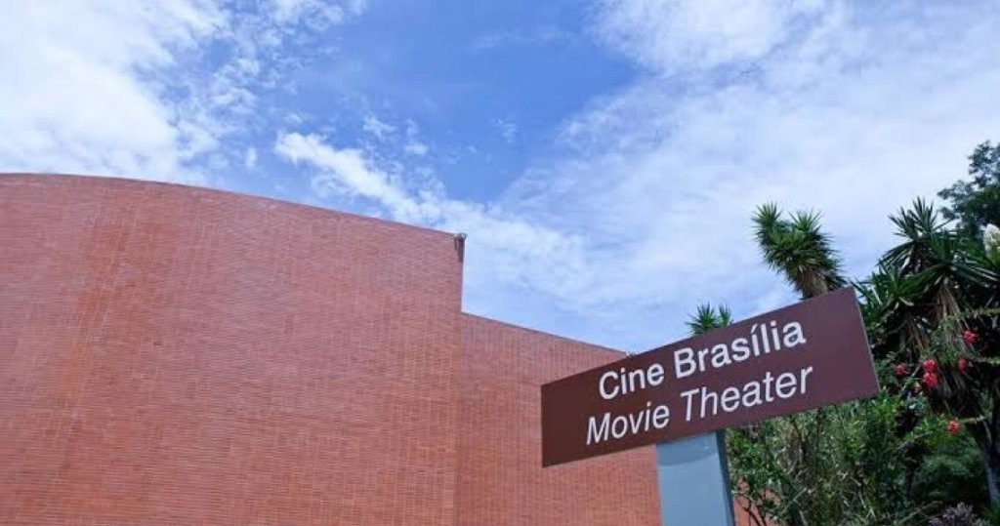
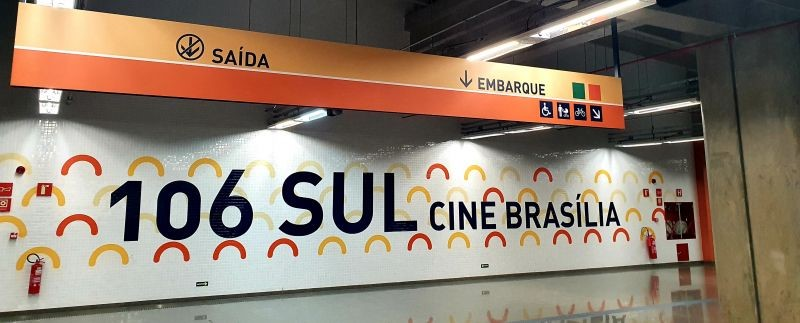

Accesibilidad en el Cine Brasília
Sobre el Cine Brasília
El Cine Brasília fue concebido para ser un cine de barrio que acompañara el proyecto modelo de las primeras cuadras residenciales de Brasília. Es el cine más antiguo de la capital y fue inaugurado el 22 de abril de 1960, un día después de la fundación de la ciudad.

Su edificio fue diseñado por Oscar Niemeyer y dialoga con toda la propuesta estética original de la ciudad: es un espacio bucólico, arbolado y con amplios espacios. Es un cine a la antigua y no se encuentra en un centro comercial, como suele ser habitual.
El Cine Brasília es uno de los centros de exhibición cinematográfica más importantes de América Latina. Exhibe largometrajes y cortometrajes, organiza muestras y festivales temáticos, realiza sesiones infantiles, y ofrece conferencias y actividades formativas con figuras destacadas del panorama nacional e internacional. Su programación es diversa y ya ha exhibido películas de 52 países en más de 30 idiomas.

Tiene tres niveles de protección patrimonial: es patrimonio distrital, federal y mundial.
El Cine Brasília tiene la sala de cine más grande del Distrito Federal, con una capacidad para 619 espectadores. La programación se publica semanalmente en su sitio web y en sus redes sociales.
Accesibilidad del Cine Brasilia
La accesibilidad del Cine Brasília comienza desde su ubicación. Situado en el Plano Piloto entre las cuadras 106 y 107 Sur, el cine es fácilmente accesible en metro, a través de la estación 106 Sur, o en autobuses que pasan por el Eixinho.

Además, su accesibilidad física está presente en la calle, con rampas con la inclinación adecuada para el acceso. El lugar cuenta con un amplio estacionamiento con seis plazas reservadas para personas con discapacidad física. El Cine Brasília también tiene una ruta de suelo táctil para orientar a los visitantes con discapacidad visual, que va desde los accesos peatonales hasta el interior del edificio.
La sala de cine cuenta con asientos cómodos para personas obesas y hay 16 espacios reservados para personas en silla de ruedas en diferentes sectores, con asientos reservados para acompañantes junto a cada uno. Se permite la entrada de perros guía.

El escenario para artistas y conferencistas con discapacidad física tiene acceso mediante una plataforma elevadora junto a un pequeño tramo de escaleras. El baño del cine también es accesible y cuenta con una silla de ruedas disponible para personas con movilidad reducida.
Este es el único cine en Brasília donde se realizan proyecciones de películas con audiodescripción e interpretación en Libras. El cine también ofrece la "Sesión Atípica", dirigida a personas autistas y neurodivergentes, en la que el sonido está reducido, las luces de la sala permanecen encendidas y el aire acondicionado se mantiene a temperatura ambiente. En esta sesión, se permite la libre circulación por la sala.